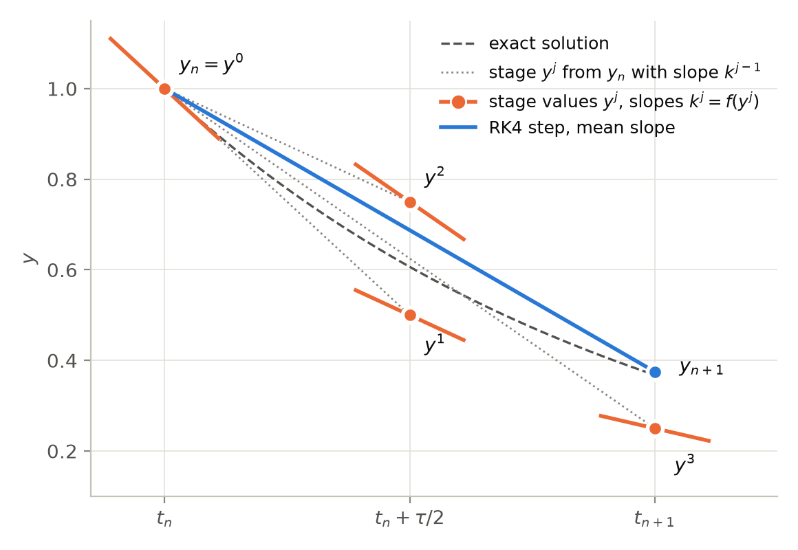
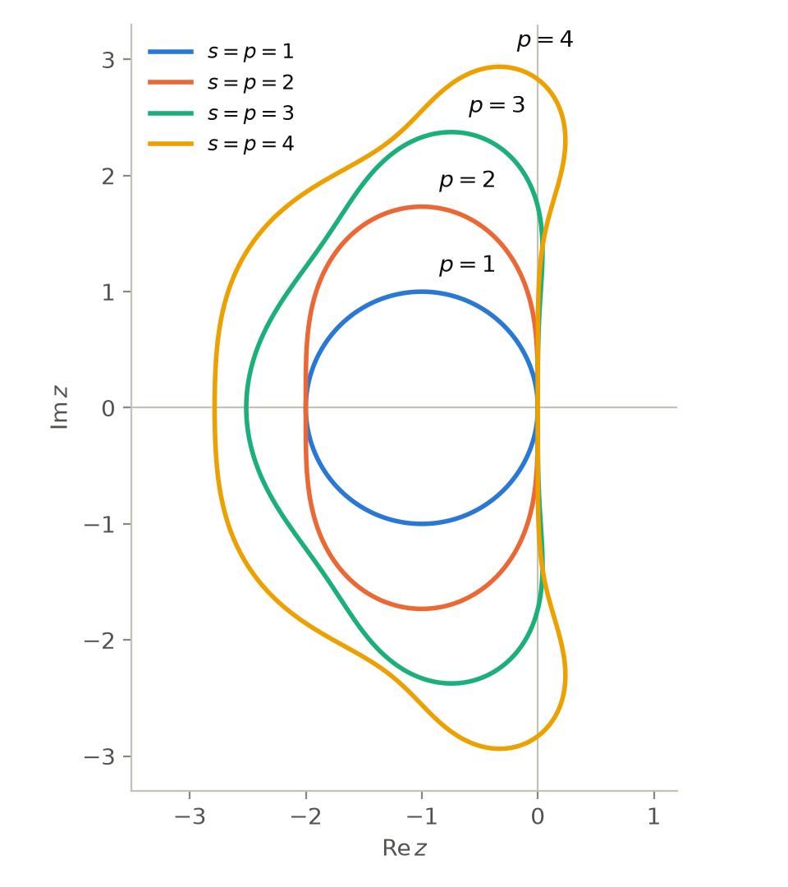

19. Runge-Kutta methods#
Recall the integral formulation of the ODE on time interval \([t_n, t_{n+1}]\):
The goal of Runge-Kutta methods is to obtain higher accuracy by using more accurate numerical integration rule:
where
\(s\) is called the number of stages
\(c_j, b_j\) are points and weights of the quadrature rule
\(y_n^j\) are approximations to \(y(t_n + c_j \tau)\), which are also unknown
The exact values at the stage-points are
Again, we use numerical integration to define the numerical stage values (skipping the index \(n\)):
We use the same integration points as above, however the weights are adjusted to the smaller interval such that
A particular RK method is completely defined by providing the \(a\), \(b\), and \(c\) coefficients, which are usually given in the so called Butcher tableau:
Instead of having the \(y^j\) as unknowns, one often solves for \(k\)-values (\(k\) like slope):
and then
19.1. Explicit RK methods#
Explicit RK methods can be seen as extension of the explicit Euler method. The \(a_{jk}\) coefficients form a strictly lower triangular matrix.
Examples are
the \(RK_2\) - method, aka the explicit mid-point rule
\[\begin{split} \begin{array}{c|cc} 0 & 0 & 0 \\ \frac{1}{2} & \frac{1}{2} & 0 \\ \hline & 0 & 1 \end{array} \end{split}\]It is evaluated as
\[\begin{split} \begin{array}{rcl} y^0 & = & y_n \\ y^1 & = & y_n + \tfrac{\tau}{2} f(t_n, y^0) \end{array} \end{split}\]and then
\[ y_{n+1} = y_n + \tau f(t_n+\tfrac{\tau}{2}, y^1) \]Evaluation in \(k\)-values:
\[\begin{split} \begin{array}{rcl} k^0 & = & f(t_n, y_n) \\ k^1 & = & f(t_n+\frac{\tau}{2}, y_n + \frac{\tau}{2} k^0) \end{array} \end{split}\]and then
\[ y_{n+1} = y_n + \tau k^1 \]the \(RK_4\) - method, aka THE classical Runge Kutta method
and then
and then


Fig. 19.1 One step of the classical \(RK_4\) method for \(y^\prime = -y\). Each stage value \(y^j\) is reached from \(y_n\) with the slope \(k^{j-1}\) of the previous stage (dotted), \(y^1\) and \(y^2\) both at \(t_n + \tau/2\). The step uses the mean slope \(\frac{1}{6} (k^0 + 2 k^1 + 2 k^2 + k^3)\), and lands close to the exact solution.#
19.2. Implicit Runge Kutta methods#
Methods of optimal accuracy (order \(2s\)) are obtained based on Gaussian quadrature:
Gauss-Legendre 2 method:
If not all time-scales are resolved, then \(c_{s-1} = 1\) leads to better stability (i.e. L-stability). The other points are chosen for optimal accuracy. These methods are called Radau IIA, they have order \(2s-1\).
Two-point Radau IIA method:
Many examples can be found here: Butcher tableaus examples.
19.3. Order and stability of Runge-Kutta methods#
The order \(p\) of a Runge-Kutta method (see section Consistency and convergence) is determined by algebraic conditions on the coefficients, obtained by Taylor expansion. For example, the quadrature rule \((b, c)\) must be exact for polynomials of degree \(p-1\), further conditions involve the \(a\)-coefficients. The number of conditions grows quickly with the order (8 conditions for \(p = 4\)). An explicit method with \(s\) stages has order at most \(s\), for \(p \geq 5\) more than \(p\) stages are needed.
For the test equation \(y^\prime = \lambda y\) (see section Stability for linear ODEs), the stability function of an explicit method is a polynomial. Thus \(|g(z)| \rightarrow \infty\) for \(|z| \rightarrow \infty\), and no explicit method is \(A\)-stable.


Fig. 19.2 Boundaries of the domains of stability of explicit Runge-Kutta methods with \(s = p\) stages, the domain is the inside of each curve. The domains grow with the order, but stay bounded.#
method |
stages \(s\) |
order \(p\) |
type |
\(A\)-stable |
\(L\)-stable |
|---|---|---|---|---|---|
explicit Euler |
1 |
1 |
explicit |
no |
no |
explicit mid-point (\(RK_2\)) |
2 |
2 |
explicit |
no |
no |
classical \(RK_4\) |
4 |
4 |
explicit |
no |
no |
implicit Euler (= Radau IIA, \(s=1\)) |
1 |
1 |
implicit |
yes |
yes |
implicit mid-point (= Gauss-Legendre, \(s=1\)) |
1 |
2 |
implicit |
yes |
no |
Crank-Nicolson |
2 |
2 |
implicit |
yes |
no |
Gauss-Legendre |
\(s\) |
\(2s\) |
implicit |
yes |
no |
Radau IIA |
\(s\) |
\(2s-1\) |
implicit |
yes |
yes |
The Crank-Nicolson method is the RK method with \(c = (0, 1)\), \(b = (\frac{1}{2}, \frac{1}{2})\), and \(a_{0,\cdot} = (0, 0)\), \(a_{1,\cdot} = (\frac{1}{2}, \frac{1}{2})\).
19.4. Implementation of a Runge-Kutta time-stepper for arbitrary Butcher tableaus.#
They are implemented in ASC-ODE, branch RungeKutta. Merge that branch into your main branch:
git remote add upstream https://github.com/TUWien-ASC/ASC-ODE.git
git fetch upstream
git merge upstream/RungeKutta
For an autonomous ODE, we solve a non-linear system of equations for \(k^0, \ldots k^{s-1}\) such that
This system of equations is rewritten in compact form for the unknown \(k \in {\mathbb R}^{sd}\):
Where
\(k = (k^0, \ldots k^{s-1})\), with \(k^j \in {\mathbb R}^d\)
\(\tilde y_n = (\underbrace{y_n, \ldots , y_n}_{s \text{ times}}) \in {\mathbb R}^{sd}\)
\(\tilde f : {\mathbb R}^{sd} \rightarrow {\mathbb R}^{sd} : (x_0, \ldots, x_{s-1}) \mapsto (f(x_0), \ldots, f(x_{s-1}))\)
for \(A \in {\mathbb R}^{p \times q}\) define \(A \otimes : {\mathbb R}^{qd} \rightarrow {\mathbb R}^{pd} : (x_0, \ldots, x_{q-1}) \mapsto (z_0, \ldots , z_{p-1})\) such that \(z_j = \sum_l a_{jl} x_l\), i.e. multiplication with the Kronecker product \(A \otimes I_d\).
For \(\widetilde f\) and \(A \otimes\) the branch adds two building blocks to the function algebra in src/nonlinfunc.hpp.
MultipleFunc applies \(f\) to every block of the vector. Its Jacobi matrix is block-diagonal, every block is computed
by evaluateDeriv of \(f\) itself:
void evaluate (VectorView<double> x, VectorView<double> f) const override
{
for (size_t i = 0; i < num; i++)
func->evaluate(x.range(i*fdimx, (i+1)*fdimx),
f.range(i*fdimf, (i+1)*fdimf));
}
void evaluateDeriv (VectorView<double> x, MatrixView<double> df) const override
{
df = 0.0;
for (size_t i = 0; i < num; i++)
func->evaluateDeriv(x.range(i*fdimx, (i+1)*fdimx),
df.rowRange(i*fdimf, (i+1)*fdimf).colRange(i*fdimx, (i+1)*fdimx));
}
Here we see why evaluate and evaluateDeriv take vector- and matrix-views: \(f\) writes directly into a block of the
big vector and the big matrix, no copies are needed.
MatVecFunc implements the linear map \(A \otimes\). If we interpret the vector \(x \in {\mathbb R}^{qd}\) as a \(q \times d\) matrix \(X\),
where row \(l\) holds the block \(x_l\), then \(A \otimes x\) is simply the matrix product \(A X\):
void evaluate (VectorView<double> x, VectorView<double> f) const override
{
MatrixView<double> mx(m_a.cols(), m_n, m_n, x.data());
MatrixView<double> mf(m_a.rows(), m_n, m_n, f.data());
mf = m_a * mx;
}
Its Jacobi matrix is the constant matrix \(A \otimes I_d\), consisting of the diagonal blocks \(a_{jl} I_d\).
With these building blocks, the constructor of ImplicitRungeKutta in src/implicitRK.hpp writes down the equation
\(k - \widetilde f ( \tilde y_n + \tau A \otimes k) = 0\) almost literally:
auto multiple_rhs = make_shared<MultipleFunc>(rhs, m_stages);
m_yold = std::make_shared<ConstantFunction>(m_stages*m_n);
auto knew = std::make_shared<IdentityFunction>(m_stages*m_n);
m_equ = knew - Compose(multiple_rhs, m_yold + m_tau*std::make_shared<MatVecFunc>(a, m_n));
The time-step sets the constant \(\tilde y_n\) and the parameter \(\tau\), solves for \(k\) with Newton’s method, and combines the stages with the weights \(b_j\):
void doStep(double tau, VectorView<double> y) override
{
for (int j = 0; j < m_stages; j++)
m_y.range(j*m_n, (j+1)*m_n) = y;
m_yold->set(m_y);
m_tau->set(tau);
m_k = 0.0;
NewtonSolver(m_equ, m_k);
for (int j = 0; j < m_stages; j++)
y += tau * m_b(j) * m_k.range(j*m_n, (j+1)*m_n);
}
As for the implicit Euler method, nobody codes the Jacobi matrix \(I - \tau \, \widetilde f^\prime \, (A \otimes I_d)\) of the stage equations,
it follows from the chain-rule in ComposeFunction. Newton’s method solves a dense system of size \(sd\), which is fine for small systems.
For large systems one exploits the block structure, but this is beyond this class.
For explicit methods, the matrix \(A\) is strictly lower triangular, and the stages can be computed one after the other without Newton’s method.
19.4.1. Runge-Kutta methods of arbitrary order#
If we have fixed the integration points \(c_j\), we can compute the \(a_{jl}\) and \(b_j\) coefficients such that the integration rules are (at least) exact for polynomials up to degree \(s-1\):
and
These are linear equations with the Vandermonde matrix \((c_l^k)_{k,l}\), they are solved by the function computeABfromC.
The resulting methods are called collocation methods: the stage values are the values of the polynomial of degree \(s\)
which satisfies the ODE in the points \(t_n + c_j \tau\).
If the \(c_j\) are the Gauss points, the quadrature rule \((b,c)\) is exact even up to degree \(2s-1\), and we obtain the Gauss-Legendre methods of order \(2s\). The Gauss points are the roots of the Legendre polynomial \(P_s\), transformed from \([-1,1]\) to \([0,1]\).
For the Radau IIA methods, the points are the roots of the Jacobi polynomial \(P^{(1,0)}_{s-1}\), transformed to \([0,1]\), together with \(c_{s-1} = 1\).
The functions GaussLegendre and GaussRadau compute these points, they are taken from
Numerical recipes, section 4.6.
19.5. Exercises#
Try out and compare various Runge-Kutta methods already implemented for the examples above.
Use
computeABfromCwith the \(c\)-coefficients from Gauss-Legendre 2 and two-point Radau IIA, and check whether you recover the Butcher tableaus above. Do the same for Gauss-Legendre 3 and three-point Radau IIA (from the web-page above).Measure the order of convergence of Gauss-Legendre and Radau IIA methods with \(s = 1, 2, 3\) stages, as in the exercise for the implicit Euler method. Do you observe orders \(2s\) and \(2s-1\)? What happens for very small time-steps?
Compute the Gauss points yourself: evaluate \(P_s\) and its derivative with the Legendre polynomials and the
AutoDiffclass from section Automatic Differentiation, and find the roots by Newton’s method. Good initial guesses are \(x_j = \cos \big( \pi \frac{j + 3/4}{s + 1/2} \big)\), \(0 \leq j < s\). Compare withGaussLegendre.Implement and test an
ExplicitRungeKuttatime-stepper for arbitrary Butcher tableaus (with a strictly lower triangular matrix for the \(a\)-coefficients). Use the same constructor asImplicitRungeKutta, such that both can be exchanged:ExplicitRungeKutta (std::shared_ptr<NonlinearFunction> rhs, const Matrix<> & a, const Vector<> & b, const Vector<> & c);
Verify the order of the \(RK_4\) method with the convergence test.